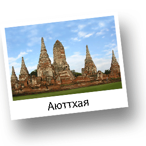

История Таиланда
Самые ранние археологические находки, свидетельствующие о жизни древних людей на территории Таиланда, были найдены на севере-востоке страны близ деревни Бан Прасат. По свидетельству находок, древние люди выращивали здесь рис еще в IV тысячелетии до нашей эры, это говорит о том, что в Таиланде рис появился значительно раньше, чем в Китае. В Китае в это время выращивали и употребляли в пищу только просо. В течении последующих нескольких тысячелетий из Южного Китая на территорию современного Таиланда мигрировали три крупные группы народов - моны, кхмеры и тай. Моны селились в основном на территории современной Мьянмы (Бирме), кхмеры создали свое государство - Камбоджу, а тайцы, к 1200 году, основали государства Ланна, Сукхотай и Пхаяо, которые доминировали в Северном Таиланде.

Суккхотай (это название можно перевести как «Заря счастья») считается первым полностью независимым тайским государством, которое и стало колыбелью тайской культуры.
Упадок Сукхотая начался в 1300 годах. В результате государство стало лишь частью Аюттхаи - мощного королевства, основанного в 1350 году немного южнее.
В течение тех четырех столетий, пока Аюттхая доминировала в этом регионе, высокого уровня достигла тайская культура, обогащенная элементами кхмерского наследия. Свое влияние оказало и то, что в этот период были установлены тесные контакты с Индией, Китаем, Японией, Арабскими странами и европейскими державами, особенно с Португалией и Голландией.
Королевство Аюттхая было разрушено бирманскими войсками в 1767 году, это стало тяжелым ударом для тайцев. Однако бирманцы не смогли долго удерживать под своим контролем Королевство. В 1769 году Великий король Таксин основал на берегу реки Чао Прайи новую столицу Тхонбури и объединил под своей властью всю территорию Королевства. В 1782 году Великий король Рама I, первый властитель из династии Чакри, перенес столицу на другой берег реки, в Бангкок.
Двум королям из династии Чакри, Монгкуту (Рама IV), который правил с 1851 по 1868 год, а также его сыну, королю Чулалонгкорну (Рама V), правившему с 1869 по 1910 год, удалось отразить колониальную экспансию европейских держав. Благодаря этим монархам Таиланду удалось сохранить свой суверенитет и предотвратить вмешательство иностранных держав.